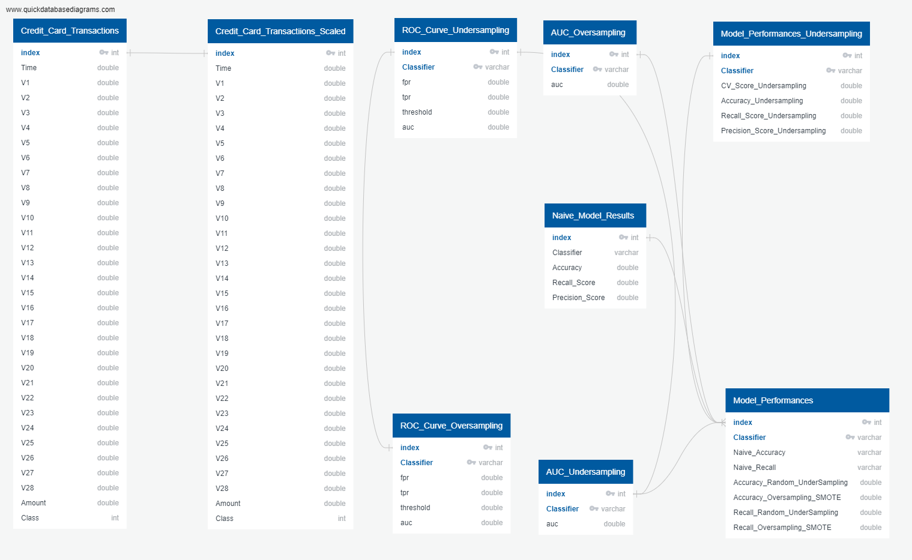
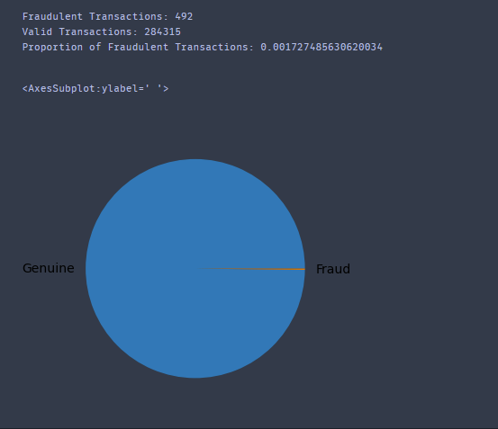
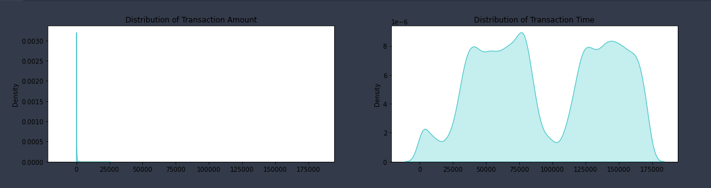

This web page contains readme content and links to the presentation and dashboard for credit card fraud detection machine learning project Code can be found here
Credit Card Fraud Detection
Overview
The Annual Data Book compiled by the Federal Trade Commission reports that Credit card fraud accounted for 393,207 of the nearly 1.4 million reports of identity theft in 2020. This makes credit card fraud the second most common type of identity theft reported, behind only government documents and benefits fraud for that year. Some surveys suggest that a typical organization loses 5% of their yearly revenues to fraud. These numbers can only increase since the number of non-cash transactions increases provides more opportunities for credit card fraud.
For retailers and banks to not lose money, procedures must be put in place to detect fraud prior to it occurring. Credit card companies must identify fraudulent credit card transactions so that customers are not charged for items that they did not purchase. To combat this problem, financial institution traditionally uses rule-based approaches to identify fraudulent transactions. These algorithms use strict rules to determine when a transaction is fraudulent.Some challenges of a strict rule-based algorithm include:
- Any new scenario that could lead to fraud needs to be manually coded into the algorithm
- Increases in customers and size of data leads to a corresponding increase in the human effort, time and cost required to track new scenarios and update the algorithm
- Since the algorithm cannot go beyond defined rules, it cannot dynamically recognize new scenarios that could result in fraudulent transaction.
To overcome these limitations, organizations are beginning to utilize machine learning and data science to build fraud detection systems. Given the size of available data, computational resources, and powerful machine learning algorithm available today, data science and machine learning processes will be able to find patterns in data and detect frauds easily.
The Dataset
The goal of this Credit Card Fraud Detection project is to classify a transaction as valid or fraudulent in a large dataset. Since we are dealing with discrete values, this is a binary classification problem, and we would employ the use of a supervised machine learning algorithm. The dataset used contains transactions made by credit cards in September 2013 by European cardholders. This dataset presents transactions that occurred in two days, where we have 492 frauds out of 284,807 transactions. The dataset is highly unbalanced; the positive class (frauds) account for 0.172% of all transactions. The dataset contains only numerical input variables which are the result of a PCA transformation which was done to deidentify and anonymize the dataset for confidentiality issues. Features V1, V2, ... V28 are the extracted features obtained with PCA, the only features which have not been transformed with PCA are ‘Time’ and ‘Amount’. Feature ‘Time’ contains the seconds elapsed between each transaction and the first transaction in the dataset. The feature ‘Amount' is the transaction Amount. Feature 'Class' is the response variable, and it takes value 1 in case of fraud and 0 otherwise.
Initial Approach
The is an imbalanced dataset. The imbalance between classes is compensated using oversampling and under sampling. The logistic regression, random forest, support vector machine, k-means are used within a cross-validation framework. Lastly, recall and accuracy are considered as metrics while choosing the best classifier.
Control Flow
- Understanding the problem
- Importing required libraries and understanding their use
- Importing data and learning its structure
- Performing basic EDA
- Scaling different variables
- Outlier treatment
- Building basic Classification model with Random Forest
- Nearmiss technique for under sampling data
- SMOTE for oversampling data
- cross validation in the context of under sampling and oversampling
- Pipelining with sklearn/imblearn
- Applying Linear model: Logistic Regression
- Applying Ensemble technique: Random Forest
- Applying Non-Linear Algorithms: Support Vector Machine, Decision Tree, and k-Nearest Neighbor
- Making predictions on test set and computing validation metrics
- ROC curve and Learning curve
- Comparison of results and Model Selection
- Visualization with seaborn and matplotlib

Technology
Logistic Regression
Logistic regression is a classification algorithm used to find the probability of event success and event failure. It is used when the dependent variable is binary (0/1, True/False, Yes/No) in nature. It supports categorizing data into discrete classes by studying the relationship from a given set of labelled data. It learns a linear relationship from the given dataset and then introduces a non-linearity in the form of the Sigmoid function.
Why Logistic Regression
- Logistic regression is easy to implement, interpret, and very efficient to train.
- It makes no assumptions about distributions of classes in feature space.
- It not only provides a measure of how appropriate a predictor (coefficient size) is, but also its direction of association (positive or negative).
- It has Good accuracy for many simple data sets and it performs well when the dataset is linearly separable.
Random Forest
Random forest is a technique used in modeling predictions and behavior analysis and is built on decision trees. It contains many decision trees representing a distinct instance of the classification of data input into the random forest. The random forest technique considers the instances individually, taking the one with most votes as the selected prediction.
Why Random Forest
- It reduces overfitting in decision trees and helps to improve the accuracy
- It is flexible to both classification and regression problems
- It works well with both categorical and continuous values
- It automates missing values present in the data
- Normalizing of data is not required as it uses a rule-based approach.
SVM
While SVMs do a good job recognizing speech, face, and images, they also do a good job at pattern recognition. Pattern recognition aims to classify data based on either a priori knowledge or statistical information extracted from raw data, which is a powerful tool in data separation in many disciplines.
Why SVM
- SVM works relatively well when there is a clear margin of separation between classes.
- SVM is effective in high dimensional spaces.
- SVM can be used for other types of machine learning problems, such as regression, outlier detection, and clustering.
K-Means clustering
K-means is a centroid-based algorithm, or a distance-based algorithm, where we calculate the distances to assign a point to a cluster. In K-Means, each cluster is associated with a centroid.
Why K-Means clustering
- It is easy to implement k-means and identify unknown groups of data from complex data sets.
- The results are easily presented and straighforward
- K-means algorithm can easily adjust to the changes.
- If there are any problems, adjusting the cluster segment will allow quick changes to the algorithm.
- K-means easily scales to large datasets.
Database Approach
- Load raw dataset into AWS S3 bucket/PgAdmin
- Connect to AWS S3 bucket/PgAdmin and read data into Pandas
- Load the raw data into a PgAdmin Database Instance located in AWS
- Perform preprocessing steps and store cleaned data in a new table in AWS S3 bucket/PgAdmin
- Store some intermediate results (which can be used later for visualization) in AWS S3 bucket/PgAdmin
- The connection and S3 bucket details are in the Segment_One Jupyter Notebook.
- A notebook that contains the code of the above steps is part of this repository.
Data Cleaning and Analysis
This project will utilize Jupyter notebook and the pandas library to perform data cleaning and analysis
Description of Communication Protocols
- Comminucation for this project will be via a Slack Group Chat.
- Every team member will work in their individual branches.
- Team members will create pull requests which will be collectively approved in the slack channel.
- A designated team member will validate the pull request, and merge the request to the main branch.
Results
Database ERD
Database ERD shows all tables used to store intermediate exploratory data analysis results, and modelling results.
Exploratory Data Analysis
Univariate Analysis:
- Univariate plots show that the dataset is highly imbalanced.
- The pie chart shows an imbalance in the data, with only 0.17% of the total cases being fraudulent.
- The univariate distribution plot of the time and amount feature show we have a dataset with some large outlier values for amount.
- The time feature is distributed across two days
- Bivariate plots show that the valid transaction class has a normal distribution shape across most of the features.
- Conversely, the fraud class show long-tailed distribution across many of the features.
Univariate Analysis Results
 Bivariate Analysis
- Bivariate analysis show that
Naive Model Results
- While the naive logistic classifier accuracy is 100%, our classifier did not do an excellent job at predicting fraudulent transactions.
- With precision and recall of 0.84 and 0.62, we would need a better understanding of the dataset to determine the best way to improve the recall metric.
- While the naive random forest classifier accuracy is 100%, and precision is 95%, our random forest classifier only achieved a 77% recall.
- We would need a better understanding of the dataset to determine the best way to improve the recall metric.